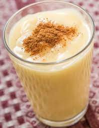

Akasan

Description
Akasan is a drink made from corn flour and spices that is very popular in Haiti. Akasan consists of corn flour, evaporated milk and spices, usually cinnamon and aniseed.
This traditional Haitian drink has the consistency of a thick milkshake. Some will find that akasan has the consistency of a smoothie. It is a sweetened drink very popular with Haitian locals who consume it without moderation.
Ingredients
- 2½ cups water
- 12 oz. evaporated milk
- ⅔ cup corn flour
- 3 star anise pods (or 1 teaspoon star anise extract)
- 1 teaspoon vanilla extract
- ⅓ cup cane sugar
- ½ teaspoon salt
- 1 teaspoon ground cinnamon
Steps
- In a heavy-bottomed saucepan, bring half the water, salt, cinnamon and star anise pods to a boil.
- In a bowl, combine the corn flour and the remaining water into a paste.
- Slowly add the batter to the boiling liquid in the pot and whisk constantly to remove any lumps.
- If necessary, use a hand blender after removing the star anise.
- Reduce the heat to medium and cook for 5 minutes, stirring constantly.
- Remove the star anise and add the vanilla and evaporated milk.
- Mix well then serve lukewarm or cool.
Go to Home page